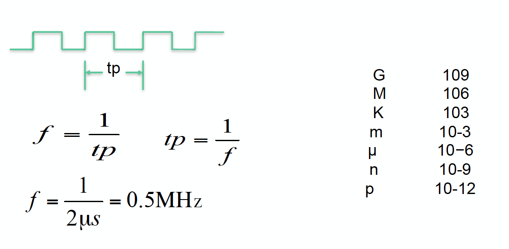

Week 1
What is your microprocessor in your PC?
How do we call the microprocessor usually?
What is the meaning of “64bits 3.3GHz Octa-core RISC processor”?
- Clock frequency, Bus width, Number of cores, instruction set of architecture
- What is the real shape of those features?
64bits - bus width
3.3GHz - clock frequency
Octa-core - number of cores
RISC - instruction set architecture
Clock frequency

process - data → information
clock - 내부 register가 동기화되서 움직이는 단위
얼마나 단위 시간당 연산을 빠르게 하는가
Parasitic resistance

Parasitic capacitance
Terminal voltage across a capacitor cannot be changed immediately.
Silicon switches have a parasitic capacitance due to the physical structure.
Serially connected resistance and capacitance result in a del, which is often called as “RC delay.”

RC delay는 모든 종류의 도선에 있는 문제
Switching and delay
Parasitic resistance and capacitance results in RC-delay.
Input → delay → output
We should wait until the output is completely changed!

parasitic capacitance가 delay를 만들어냄
RD delay는 모든 도선에서 벌어지는 일이라 없앨 수가 없다
RC delay가 계단모양으로 바뀌는 신호를 concave하게 바꿈 → 0이 1로 바뀌는 criteria가 필요
criteria를 만들지 않으면 noise에 취약해짐
일정 입력시간을 보장해야 함
logic delay - logically하게 알아먹을 시간을 줘야 한다
통신의 무결성이 보장되는 수준까지 clock frequency를 줄인 상황
도선이 어떻게 만들어졌는지에 영향을 받음
Bus and interconnection
How is the data delivered? How can you put and get the data to/from the processor?

Data transfer

본질적으로 위 예시는 둘 다 똑같음
Serial - 순서에 맞게 데이터를 보냄
- frequency가 높으면 데이터를 더 빠르게 보낼 수 있음
Parallel - serial이 여러개
- 주고받는 device 사이에
Single and multicore architecture

RICS vs. CISC
| RICS | CISC |
|---|---|
| Emphasis on hardware | Emphasis on software |
| Multiple instruction sizes and formats | Instructions of same set with few formats |
| less registers | Uses more registers |
| more addressing modes | Fewer addressing modes |
| Extensive use of microprogramming | Complexity in compiler |
| Instruction takes a varying amount of cycle time | Instructions take one cycle time |
| Pipelining is difficult | Pipelining is easy |